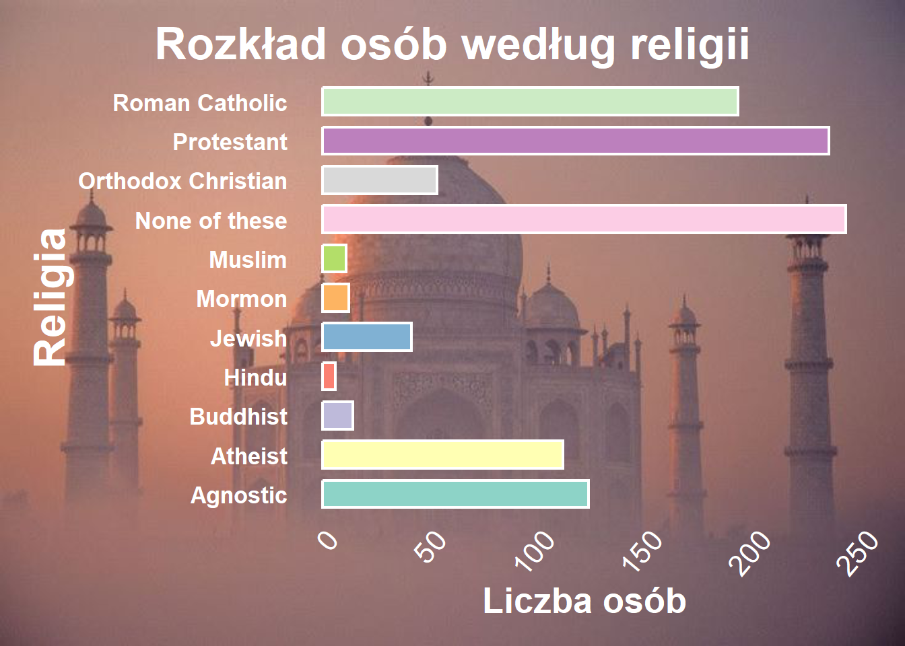
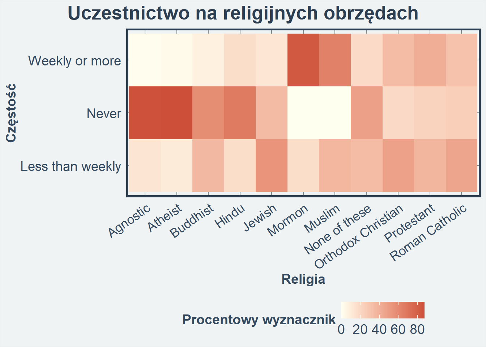
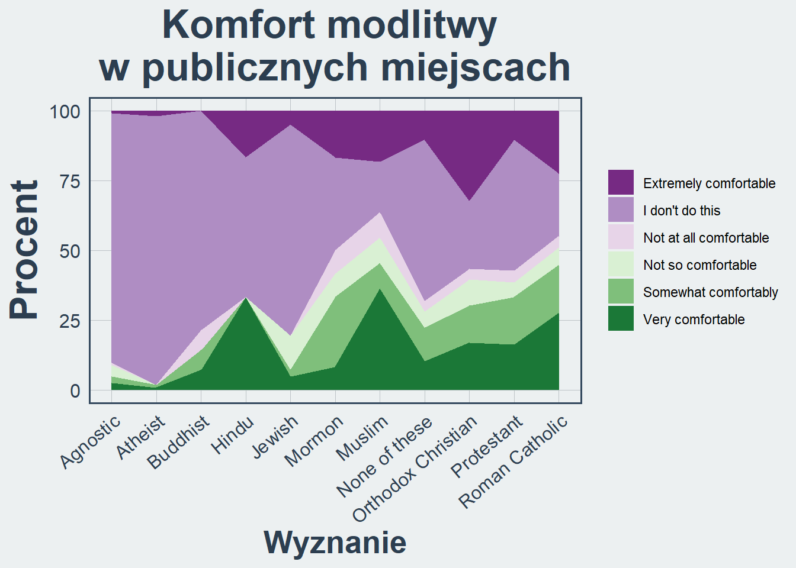
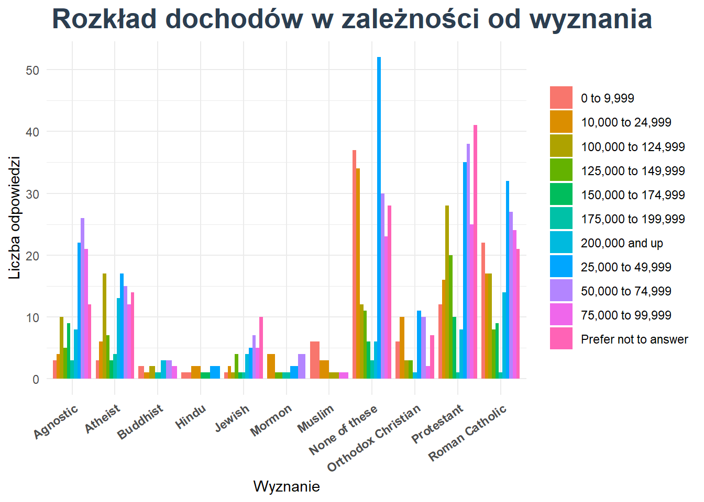

Wstęp
Projekt ten ma na celu analizę różnorodnych aspektów religijności i związanych z nią postaw w społeczeństwie. Skupiono się na badaniu wyznań, ich znaczenia kulturowego, wpływu na codzienne życie oraz na relacjach między różnymi grupami wyznaniowymi. Dzięki zgromadzonym danym przeanalizowano zarówno kwestie tożsamości religijnej, jak i indywidualne postawy wobec praktyk religijnych, takich jak modlitwa w miejscach publicznych czy uczestnictwo w obrzędach.
Analiza tych danych pozwala lepiej zrozumieć, jakie są różnice i podobieństwa między grupami wyznaniowymi oraz jakie wyzwania i możliwości wynikają z tej różnorodności.
Ciekawostka:
Czy agnostycy są ateistami? Nie. Ateista, podobnie jak chrześcijanin, uważa, że możemy wiedzieć czy Bóg istnieje, czy też nie istnieje.

Analiza rozkładu religii w badanej grupie
Wnioski:
Brak religii jest najczęstszą odpowiedzią (242 osoby), co może wskazywać na rosnącą liczbę osób niezwiązanych z żadną religią.
Protestanci (234 osoby) dominują w badanej grupie.
Mniejsze grupy to Ateiści (111 osób) i Agnostycy (123 osoby), co sugeruje rosnącą liczbę osób niewierzących.
Religie takie jak Hinduizm (6 osób) i Muzułmanie (11 osób) mają najmniejszą reprezentację, co może odzwierciedlać mniejszości religijne w tej próbce.
Prawosławni księża mogą się żenić, ponieważ celibat nie jest wymagany, jak w Kościele katolickim. Jednakże biskupi
muszą być nieżonaci. Ponadto, prawosławni wierzą w Maryję jako Teotokos (Matkę Bożą), ale nie czczą jej w takim
stopniu jak katolickie dogmaty, takie jak Niepokalane Poczęcie czy Wniebowzięcie.


Sekularyzacja młodszych pokoleń a przynależność religijna
Sekularyzacja to proces stopniowego zmniejszania się znaczenia religii w życiu społecznym, kulturowym i indywidualnym.
Wykres 3D wskazuje na wyraźny trend sekularyzacji wśród młodszych grup wiekowych. W grupie 18–29 lat najliczniej reprezentowaną kategorią są osoby deklarujące brak przynależności religijnej (“None of these”), w tym 27 kobiet i 26 mężczyzn. W przeciwieństwie do tego, tradycyjne religie, takie jak “Protestant” czy “Roman Catholic,” mają większą reprezentację w starszych grupach wiekowych, np. w grupie 60+ “Protestant” obejmuje aż 51 kobiet i 29 mężczyzn. To zjawisko może świadczyć o odchodzeniu młodszych pokoleń od instytucji religijnych na rzecz bardziej indywidualnych postaw światopoglądowych.

Jak często różne grupy religijne uczestniczą w obrzędach?
Regularne uczestnictwo w obrzędach religijnych jest najczęściej praktykowane przez Mormonów, Rzymskich Katolików i Protestantów.
Agnostycy i Ateiści najczęściej wcale nie biorą udziału w obrzędach religijnych.
Grupy takie jak Prawosławni Chrześcijanie, Żydzi, czy Hindusi wykazują tendencję do uczestniczenia w obrzędach religijnych mniej niż raz w tygodniu, co jest reprezentowane przez jaśniejsze odcienie czerwieni w tej kategorii.
Dominacja ciemnoczerwonych kolorów w wierszu “Never” dotyczy grup Agnostyków i Ateistów, co wskazuje na to, że osoby z tych grup rzadko lub wcale nie uczestniczą w obrzędach religijnych.


Zachowania związane z modlitwą w różnych grupach religijnych
Wyznania, takie jak protestanci, katolicy rzymscy czy prawosławni, są bardziej zaangażowane w codzienną modlitwę i proponowanie wspólnych modlitw w porównaniu z grupami, które deklarują się jako ateiści, agnostycy lub osoby bez przynależności religijnej.
Ateiści oraz agnostycy dominują w kategoriach “Never” i “Not applicable to my religious beliefs”.
Rzymscy katolicy oraz protestanci są najbardziej aktywni w codziennym wyrażaniu intencji modlitwy za innych i proponowaniu wspólnych modlitw.
Jak często mówisz komuś, że będziesz się za niego modlić
vs.
Jak często prosisz lub proponujesz modlitwę z kimś
vs.
Jak często prosisz lub proponujesz modlitwę z kimś
Współczynnik Craméra
to miara siły zależności między dwiema zmiennymi kategorycznymi. Jego wartość mieści się w zakresie od 0 do 1:
0 oznacza, że nie ma żadnej zależności między zmiennymi (są niezależne).
1 oznacza, że zmienne są całkowicie zależne (istnieje silna zależność).
jeśli znamy religię osoby, mamy pewne wskazówki na temat jej skłonności do uczestniczenia w obrzędach religijnych, ale nie jest to reguła. To nie oznacza, że osoby wyznające konkretną religię zawsze będą uczestniczyć w obrzędach, ale takie zachowanie jest bardziej prawdopodobne w tej grupie.
Współczynnik Craméra wynoszący 0,11 między pytaniem o to, „jakiej wiary jesteś?” a „jak wygodne jest dla ciebie, gdy ktoś spoza twojej religii modli się publicznie, używając fizycznych przedmiotów” oznacza, że zależność między tymi zmiennymi jest bardzo słaba.
Wniosek: Tak niski współczynnik sugeruje, że pytanie o religię i pytanie o komfort w tej konkretnej sytuacji są praktycznie niezależne od siebie.
Rozkład Religii na Świecie
Chrześcijanie stanowią największą grupę religijną na świecie. Islam, jako druga największa religia, dynamicznie się rozprzestrzenia.
Islam rozwija się nie tylko dzięki sile i atrakcyjności swoich założeń wiary, które przyciągają nowych wyznawców, ale również dzięki sprzyjającej strukturze demograficznej. W krajach, gdzie islam dominuje, populacja cechuje się wysokim wskaźnikiem dzietności oraz młodą strukturą wiekową, co dodatkowo napędza jego dynamiczny wzrost.
Chociaż obie religie będą rosły, to populacja muzułmanów przekroczy populację chrześcijan i do 2100 r. populacja muzułmanów (35%) będzie o 1% większa niż populacja chrześcijan (34%). Oczekuje się, że do końca 2100 roku liczba muzułmanów przewyższy lic

Komfort modlitwy w publicznych miejscach
Znaczące różnice między grupami: Wyznania takie jak muzułmanie, mormoni i protestanci wykazują wyższy poziom komfortu modlitwy w miejscach publicznych, co może wynikać z tradycji religijnych zachęcających do modlitwy niezależnie od miejsca.
Agnostycy i ateiści: Te grupy dominują w kategorii „I don’t do this” („Nie robię tego”), co odzwierciedla brak praktyk modlitewnych związanych z religią.
Tradycje religijne a komfort: Żydzi i prawosławni chrześcijanie wykazują zróżnicowany poziom komfortu, co może wynikać z różnic kulturowych i lokalnych norm społecznych dotyczących praktyk religijnych w przestrzeni publicznej.
Różnorodność w postawach: Większość grup wykazuje umiarkowany poziom komfortu (kategorie „Somewhat comfortably” i „Very comfortable”), co może wskazywać na akceptację modlitwy publicznej w kontekście kulturowym, ale z pewnym stopniem rezerwy.

Zarobki w przedziałach dochodowych w kontekście wyznania
Różnorodność dochodów: Dochody są zróżnicowane w każdej grupie wyznaniowej, ale niektóre wyznania, jak np. „None of these” oraz „Roman Catholic”, mają więcej osób w średnich przedziałach dochodowych.
Grupy z wyższymi dochodami: Wyznania żydowskie i protestanckie wydają się mieć więcej osób w wyższych przedziałach dochodowych (np. „200,000 and up”).
Niskie dochody: W grupach takich jak „Buddhist” i „Hindu” widać mniejszą reprezentację, ale większość jest w niższych przedziałach dochodowych.
Brak odpowiedzi: Duża liczba respondentów w każdej grupie wybrała opcję nieujawniania dochodów. To może wskazywać na pewne tabu związane z rozmowami o finansach w kontekście religijnym lub społeczny dyskomfort związany z ujawnianiem takich informacji. Szczególnie może to dotyczyć wyznań, w których istnieje nacisk na skromność lub brak przywiązywania wagi do materialnych dóbr.

Podsumowanie
Całość projektu dostarczyła istotnych informacji o religiach, postawach wobec nich oraz ich roli w życiu społecznym. Zauważalne są trendy takie jak wzrost liczby osób deklarujących brak przynależności religijnej, co wskazuje na postępującą sekularyzację, oraz różnorodność opinii w kwestii praktyk religijnych, takich jak modlitwa publiczna. Analizując dane, należy jednak pamiętać, że religia jest złożonym i osobistym aspektem życia, a nasze wyniki to jedynie wycinek szerszego obrazu.
Mimo ograniczeń analizy, wyniki wskazują na istotne zależności, np. większe zaangażowanie w obrzędy religijne wśród osób wyznających tradycyjne religie, takie jak protestantyzm czy prawosławie. Projekt podkreśla również znaczenie tolerancji i różnorodności w kontekście religijnym, co jest kluczowe w dzisiejszym globalnym społeczeństwie.

Źródła:
baza danych: https://www.kaggle.com/datasets/tunguz/religion-survey https://www.ortograf.pl/slownik/agnostyk https://www.bryk.pl/artykul/mormoni-a-amisze-czym-sie-rozni-ich-zycie-i-obyczaje#h_150392320101706783884116 https://www.pewresearch.org/religion/2022/12/21/key-findings-from-the-global-religious-futures-project/